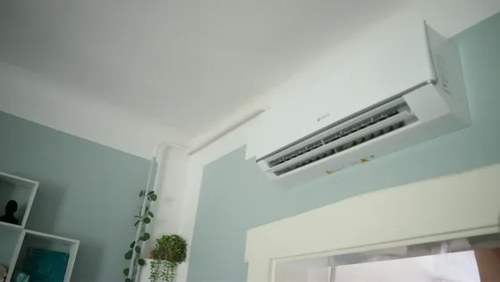
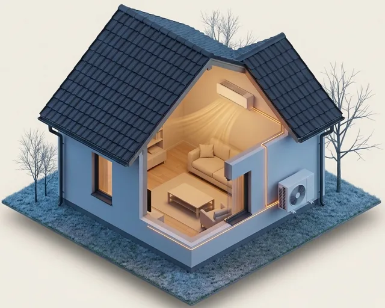
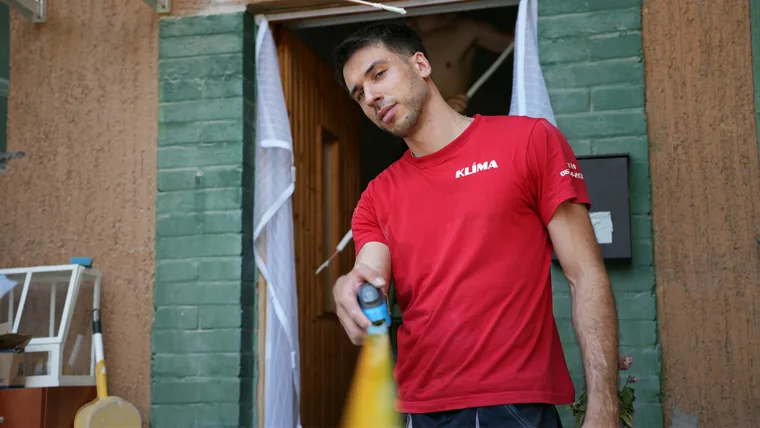
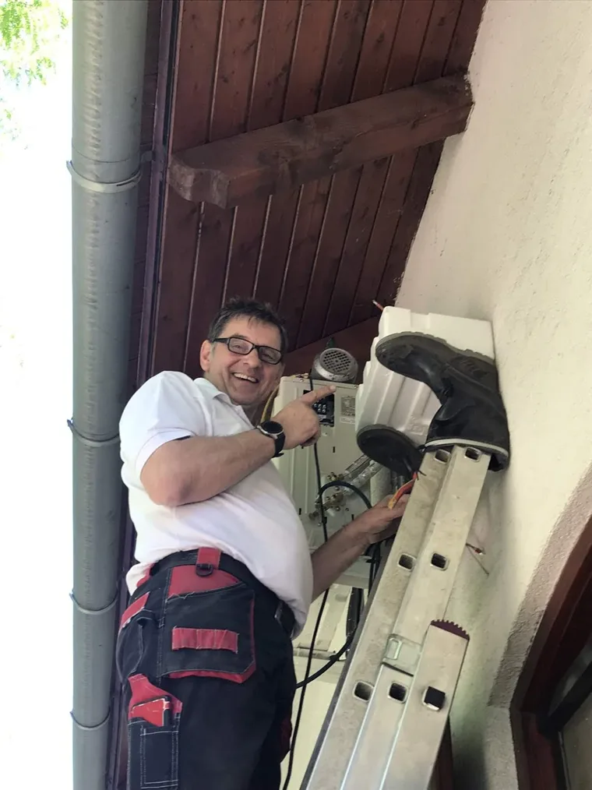
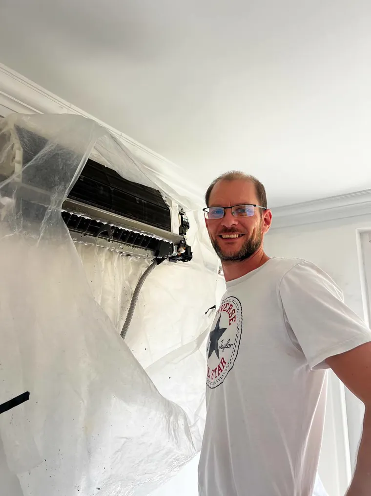
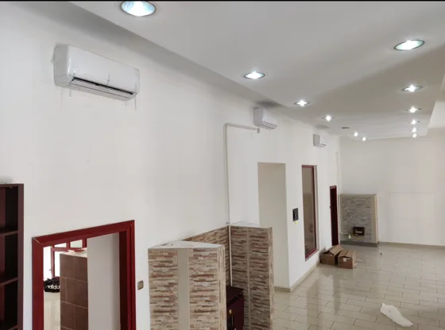
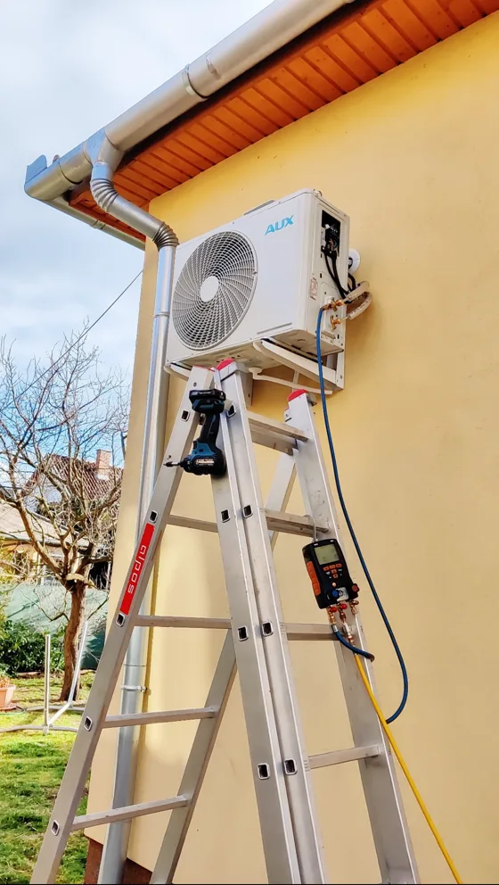

27 000 Ft kedvezmény
NORD RAC QUANTUM 3,6 kW
29-39 m² · nappali
Akció november 19-éig, készlet erejéig. Az elmúlt 30 nap legalacsonyabb ára: 355 000 Ft.
- −25 °C-igfűt is
- 4,6SCOP (fűtés)
- A+++ / A++energiaosztály
- 5 évgarancia a klímaberendezésre
Tavaly elfogyott a gázkereted?
Két fűtésre optimalizált klímát most olcsóbban szerelünk fel. Ingyen kimegyünk, megnézzük a szobát, és előre megmondjuk a végösszeget.
5,0 Google-értékelés 1000+ felszerelt gép 3 év garancia a szerelésre
Akár 27 000 Ftkedvezmény
Készlet erejéig. A felmérés, a döntés és a szerelés külön nap: ha ezen a télen már fűtenél vele, ne az utolsó hétre hagyd.
Két akciós klímaberendezés közül választhatsz. Az ár a klímaberendezést, a szerelést és 3 méter csövet tartalmazza.
27 000 Ft kedvezmény
29-39 m² · nappali
Akció november 19-éig, készlet erejéig. Az elmúlt 30 nap legalacsonyabb ára: 355 000 Ft.

18 900 Ft kedvezmény
29-39 m² · nappali
Akció november 19-éig, készlet erejéig. Az elmúlt 30 nap legalacsonyabb ára: 337 900 Ft.
Másik klímaberendezést szeretnél? Nagyobb teljesítményt, más márkát vagy több helyiséget: ugyanitt kérd, a felmérésen segítünk választani.
Másik klímaberendezést szeretnékA klímaberendezések mai árát a felmérésen vagy telefonon megmondjuk.
A kártyákon írt négyzetméter 2,6 méteres belmagasságú szobára szól. Ha nálad magasabb a plafon, a felmérésen pontosítunk.
Ezt tartalmazza a felszerelt ár:
Összesena kártyán írt ár
A 3 méter feletti cső, méterenként 15 000 Ft. Ha a kültéri hely nehezen elérhető, vésés vagy külön áramkör kell, azt a felmérésen tételesen megmondjuk, mielőtt igent mondasz.
Nem tudod, melyik kell? Kérd a felmérést, és megmondjuk.
A gáz ára
Nézd meg a számládon, hol tartasz.
Magyar lakossági tarifa, 2026 augusztusában, négyes SCOP és 90 százalékos kazánhatásfok, a tudástár „Megéri klímával fűteni gáz helyett?” cikkének számítása szerint. Ha az áramkereted is elfogy, a keret feletti áram drágább, mint a kereten belüli gáz. A pontos egységárat a saját számládon nézd meg.
| Sáv | Gáz | Klíma |
|---|---|---|
| A rezsicsökkentett kereten belül | 11 Ft | 9 Ft |
| A kereten felül | 79 Ft | 18 Ft |
Nálad mennyibe kerülne? A felmérésen előre megmondjuk, ingyen.
Kérem az ingyenes felmérést
Hogyan fűt
Ott és akkor fűt, ahol és amikor kell.
Nem a kazánt váltja ki. Mellette dolgozik. Így néz ki a falad keresztmetszetben, amikor fűt.

Kint−13 °C
−13 °C: erre méretezik a fűtést Budapesten. Az akciós klímaberendezések ilyenkor is fűtenek.
Mindegyikre legalább 3 év garancia jár.
A klímaberendezésre a gyártó garanciája jár, az akciós klímaberendezéseknél 3 vagy 5 év.
A klíma nem termeli a hőt, hanem kintről hozza be, az áram csak hajtja. Egy egység áramból átlagosan négy egység meleg lesz. Ezt méri a SCOP: az akciós klímaberendezéseknél 4,1 és 4,6.
Megnézzük, melyik szobádat fűtené jól, és mennyiért.
Kérem az ingyenes felméréstA szerelés menete

Az első lépés egy űrlap. A többit mi intézzük.
Kérem az ingyenes felméréstBudapesten és a környező településeken dolgozunk, harminc kilométeres körzetben. Írd be a településed, és megmondjuk.
A térkép képi tartalmát a fenti településkereső mező szövegesen is megadja: írd be a településed, és megmondjuk, kimegyünk-e.
Szolgáltatási terület, 77 település Szolgáltatáson kívül eső terület
A kiszállás és a felmérés ingyenes.
Rólunk
Egy szám. Ha épp szerelünk, visszahívunk. Budapesten és a környező 77 településen dolgozunk, harminc kilométeres körzetben.








Teljesen elégedett vagyok velük. A ház még építés, illetve burkolás alatt volt, amikor a klímák kerültek felszerelésre, de nagyon rugalmasan álltak hozzá. A helyszíni felmérés alapos volt és a szerelést is szépen, tisztán oldották meg. Használat közben az egyik kültéri egység ventilátorlapátja eltört, de szóltam nekik, és nagyon hamar kijöttek. Pár perc alatt kicserélték, minden gond nélkül. Jó tapasztalatom volt velük, bátran ajánlom őket.
Nagyon elégedettek vagyunk, gyorsan, tisztán, megbízhatóan dolgoznak. Minden kérésünkre találtak megoldást, szívből ajánljuk a csapatot!
Nagyon kedvesek,alaposak, mindent úgy csináltak ahogy meg volt beszélve, nagyon precízek csak ajánlani tudom őket!!:)
Mindent az előre megbeszélt módon csináltak, elégedett vagyok a munkájukkal.
Köszönöm a precíz és lelkiismeretes munkát, legközelebb is örömmel hívom Önöket. :)
Megvagyok elégedve a szolgáltatásaival, bátran tudom ajánlani bárkinek!
Telefonon kaptam időpontot Budapest 8-ik kerületében. Megbeszélt időben ki is jött egy nagyon kedves fiatal szerelő. Korrektül kimosta a beltéri egységet, fertőtlenítés is megtörtént. Be is allitotta a klímaberendezés optimalis működését. A kifizetett összeg azonos volt a telefonban megbeszéltekkel. Ajánlani tudom mindenkinek.
Gyors. Tiszta. Profi. A klímatisztítás pont olyan volt, amilyennek lennie kell: zökkenőmentes és alapos. Maximális elégedettség!
Ugyanígy dolgozunk nálad is. Kezdjük egy felméréssel?
Kérem az ingyenes felméréstGarancia
Nem beszélünk rá semmire. Megnézzük, megmondjuk, és te döntesz.

Beüzemelés
Gyakori kérdések
Attól függ, hol tartasz a gázkeretben. Amíg a rezsicsökkentett kereten belül vagy, a kettő nagyjából egálban van. A keret felett a klímával fűtés lényegesen olcsóbb, mert a gáz ára ott a többszörösére ugrik. Ha viszont az áramkereted is elfogy, a keret feletti áram drágább, mint a kereten belüli gáz. Ezt a saját számládon érdemes megnézni.
Igen. Az akciós klímaberendezések legalább −25 °C-ig fűtenek. Budapesten −13 fokra méretezik a fűtést. A hidegebb vége felé a klímaberendezés kevesebbet ad. Fagypont körül időnként pár percre leolvaszt: ilyenkor a beltéri egység nem fűt, aztán magától folytatja. Ez normális működés, nem hiba.
Egy szobában igen, egy egész lakásban a legtöbb esetben nem. A klíma azt a helyiséget fűti, ahol a beltéri egység van. A legtöbb budapesti lakásban a kettő együtt a jó megoldás: a klíma viszi az őszt és a tavaszt, a kazán a mély telet.
Három esetben mondjuk, hogy ne erre építs: ha a helyiség rosszul szigetelt, ha egy klímaberendezéssel fűtenéd ki az egész lakást, vagy ha a kazánod még évekig jó, és a gázkereten belül maradsz.
Kevéssel: ahogy a 3. lépésnél írtuk, letakarunk és porelszívóval fúrunk. Érdemes előre kivinned a szobából az érzékeny holmit, és a beltéri egység fala elől elhúzni a bútorokat.
A hangos rész, a kompresszor, a kültéri egységben van, a fal túloldalán. Hogy bent mennyire halk, azt a méretezés, a beltéri helye és a kültéri rögzítése dönti el, ezért a helyszínen nézzük meg.
A legközelebbi szabad napot a visszahíváskor megmondjuk. Ősszel hamarabb van szabad nap, mint nyáron. Egy szokványos telepítés fél napos munka, és a klímaberendezést utána azonnal használhatod.
Hatósági engedély a lakásklímához általában nem kell, a ház hozzájárulása viszont igen, mert a kültéri egység a homlokzatra kerül. Hogy közgyűlés kell, vagy elég a közös képviselő nyilatkozata, azt a ház szabályzata dönti el. A felmérés után leírást adunk hozzá: hová kerül a klímaberendezés, merre fut a cső, és ki szereli.
A kártyákon egymás mellett látod, meddig fűt a klímaberendezés, mekkora a SCOP-ja (minél nagyobb, annál takarékosabb) és mennyi gyártói garancia jár rá. Ha nem tudod eldönteni, a felmérésen megmondjuk, melyik illik a helyiségedhez.
Csak a neved, a telefonszámod és az e-mail-címed kell. Visszahívunk, egyeztetjük az időpontot, kimegyünk, és megmondjuk a pontos árat, felszerelve.
Az akció november 19-éig tart, készlet erejéig.
Ezt a klímaberendezést kéred: .